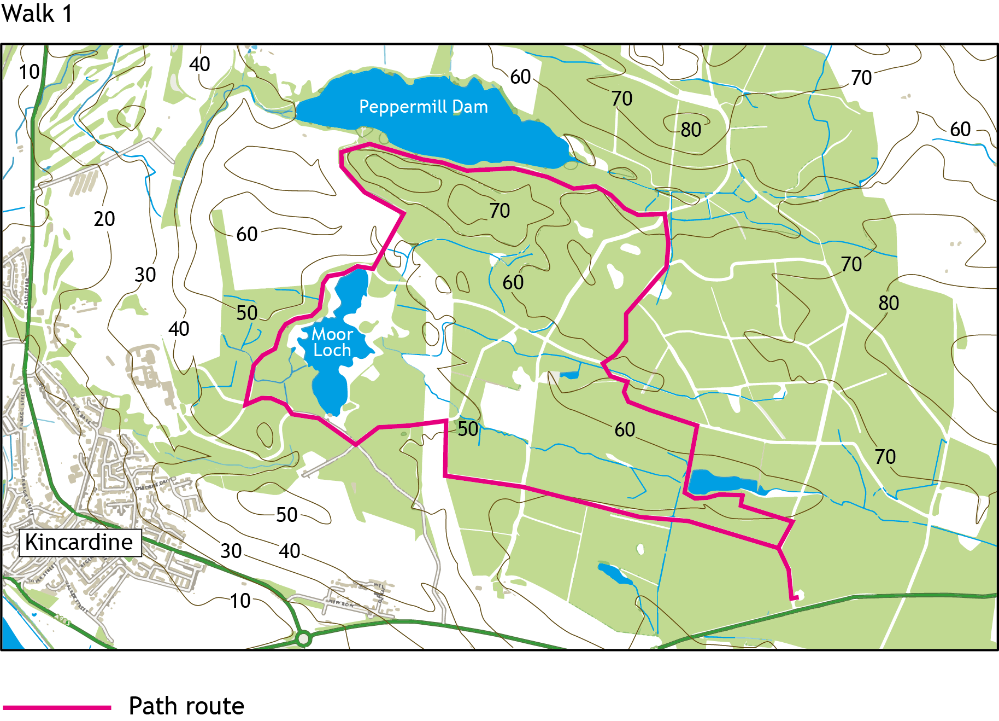
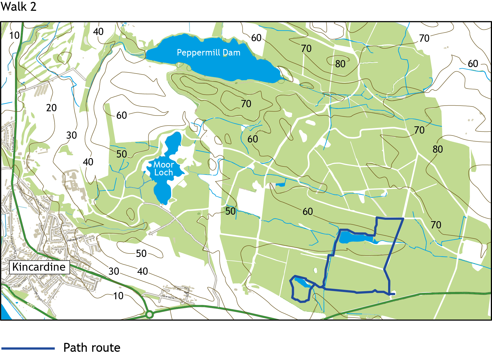

Devilla
Devilla is the largest area of Forestry Commission land in West Fife. There are multiple forestry roads running through its substantial area and many inter-linking paths between the trees to be explored. For a light walk there's also the Squirrel Trail, a relatively flat well lain path that could be walked in any footwear.
Devilla has a large, established carpark and picnic area just of the A985, a mile from Kincardine.
Walk 1: 5.5 miles
Devilla encompasses several bodies of water. This forest road and path walk loops round the West side of the wood past all three. The largest of the three is Peppermill Dam, home to a variety of water fowl. The roads in Devilla were recently relaid following a lot of logging and will require sturdy boots for the next few years walkingon the rough stone.
Walk 2: 3 miles
The squirrel walk is known locally for the red squirrels that can be spotted frequently. This walk completes the circuit round the end of the path passing several seats and nice picnic areas. On the way back a connecting path is taken to join one of the forestry roads.
